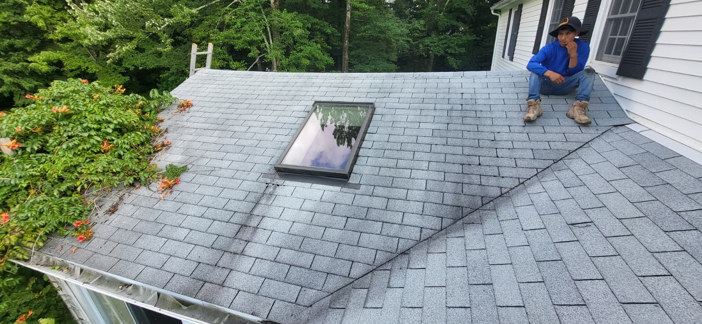
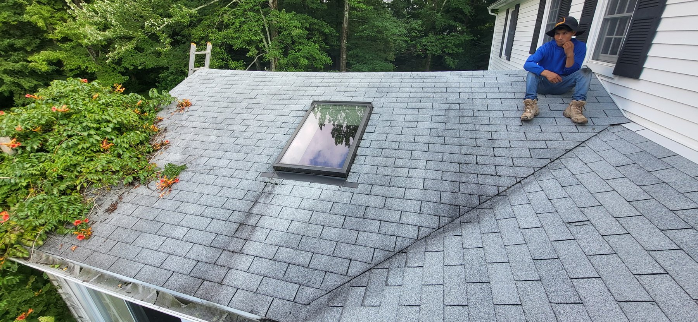
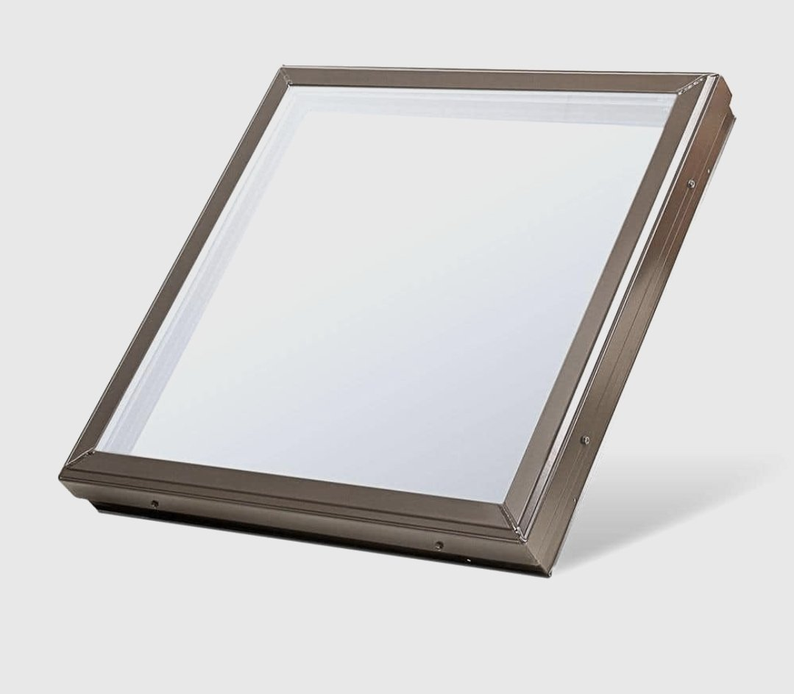
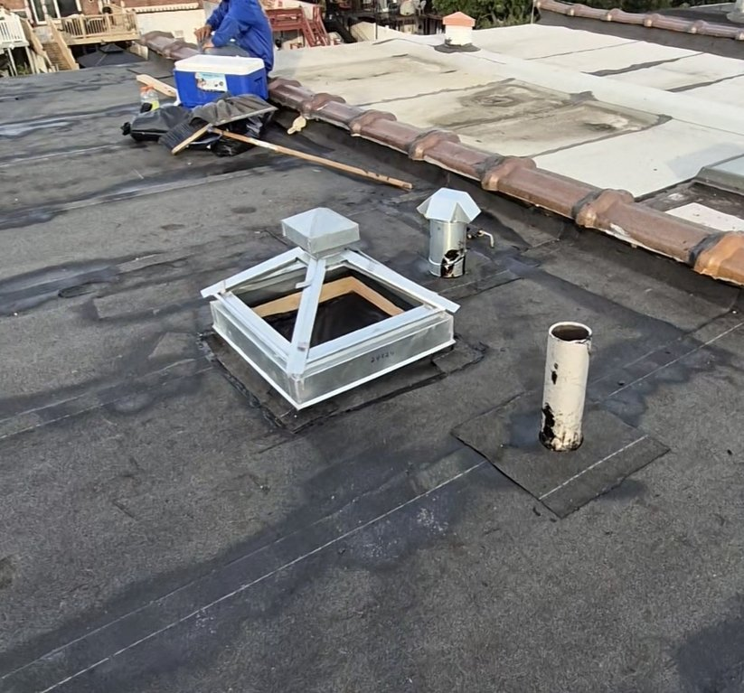
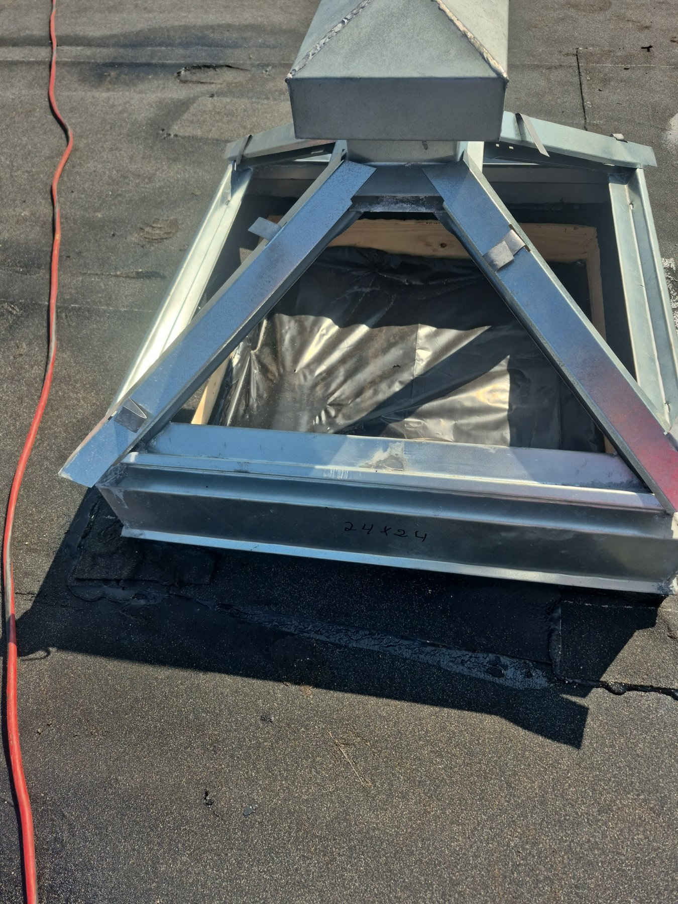
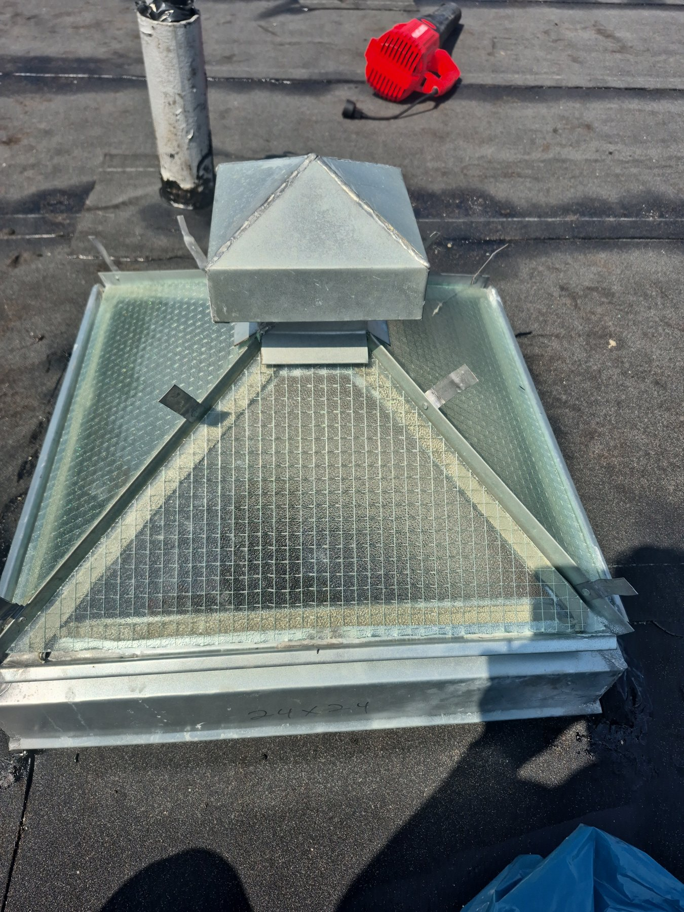
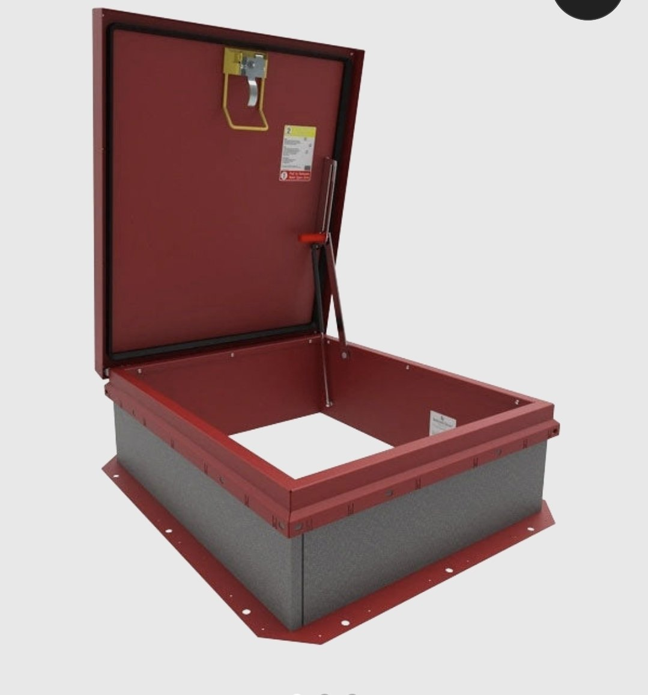
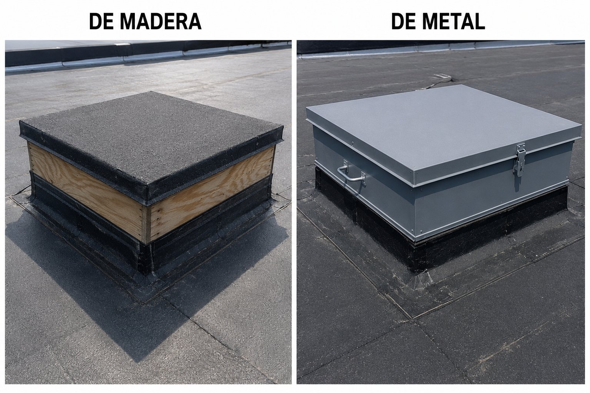
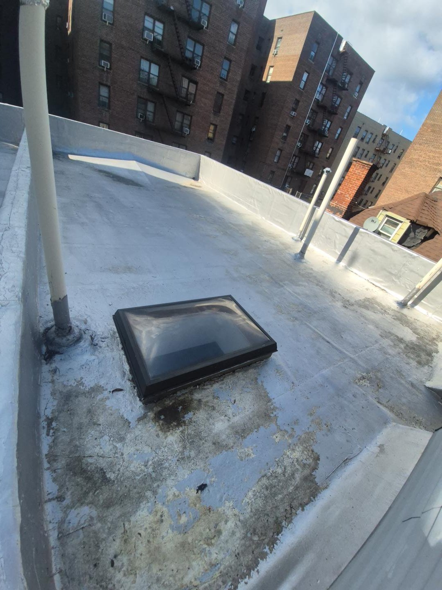
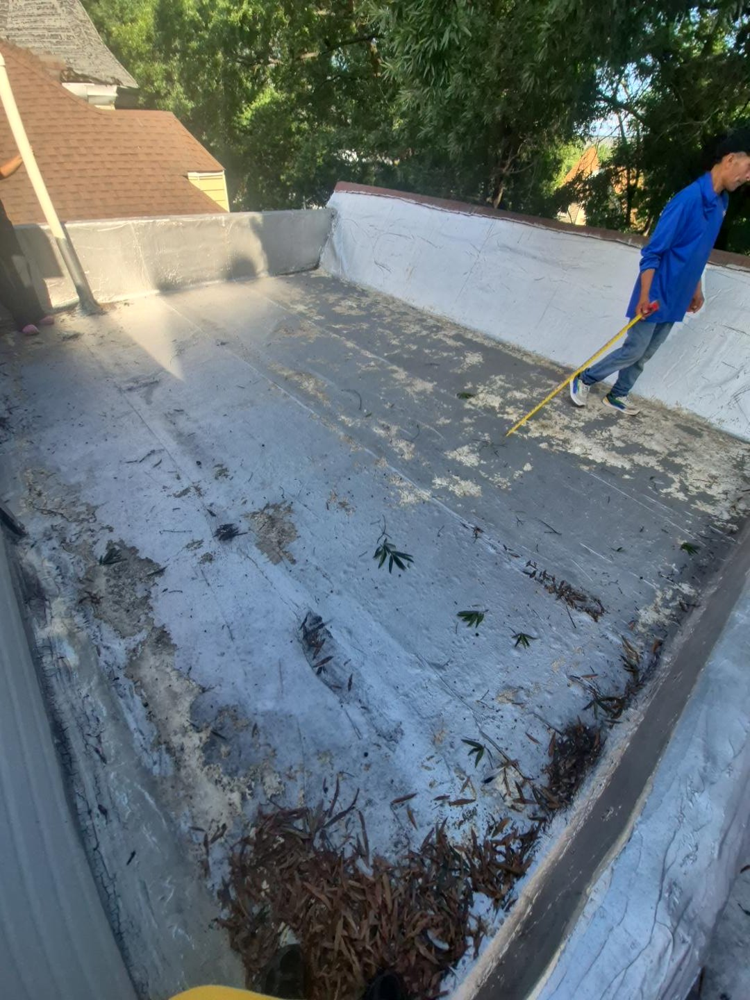

DAYLIGHT & ROOF ACCESS
Skylights & Roof Hatches
Flat skylights, copper options, galvanized pyramid skylights, and wood or metal roof access hatches. Explore the styles we install and see the details that matter around every roof opening.
Discuss your roof opening →
Natural light for a shingle roof
A rectangular skylight brings daylight into the space below. For a shingle roof, we check the roof slope, opening and surrounding shingles before selecting a compatible unit and flashing system.

The roof around the skylight matters
The flashing around the skylight must work together with the shingles and underlayment to direct water away from the opening. During replacement, we inspect the surrounding roof so the work addresses more than just the visible glass.

Flat skylights & copper options
We install flat-glazed skylights and offer copper options for projects that call for that material. The frame, glazing, curb dimensions and roof compatibility are confirmed during the estimate. This reference shows the flat skylight style; the final product may differ.

Galvanized pyramid skylights
A raised pyramid design is an option for bringing daylight into a flat-roof building. This photo shows the galvanized frame during installation, before the glass panels are fitted. We assess the existing curb and roof membrane around the opening.

Preparation before the glass goes in
The frame and raised base support the glazing and connect the skylight to the roof. This close-up shows the assembly before glazing. We check the opening, frame condition and flashing details as part of the installation.

Pyramid skylight with glass panels
This view shows the glass panels fitted into the galvanized pyramid frame. Panel edges, joints and the connection to the roof need careful attention. Glass type and any ventilation features depend on the selected unit; skylights are not walking surfaces.

Metal roof access hatches
A roof hatch provides an opening for access to the roof for maintenance. We install metal hatch options and review the opening size, curb, hinges, latch and access arrangement before choosing a unit. This image is a product reference, not a completed ST Roofing installation.

Wood or metal: choose the right hatch
We work with wood-built and metal roof access hatches. Wood assemblies need a suitable weatherproof covering and attention to exposed edges; metal units need properly detailed joints and closures. We evaluate the existing opening and roof condition to recommend an appropriate option. The image illustrates the two styles.

When to inspect an existing skylight
Water stains, damaged glazing or deteriorated material around the curb are reasons to arrange an inspection. This photo shows an existing skylight on a weathered roof. We assess the skylight and surrounding roof before recommending repair, reflashing or replacement.

Measure and inspect before installation
Planning starts with measurements and an assessment of the roof surface, drainage and nearby penetrations. This photo shows the roof being measured before work. The findings help define the scope for a new skylight, roof hatch or related roofing repairs.